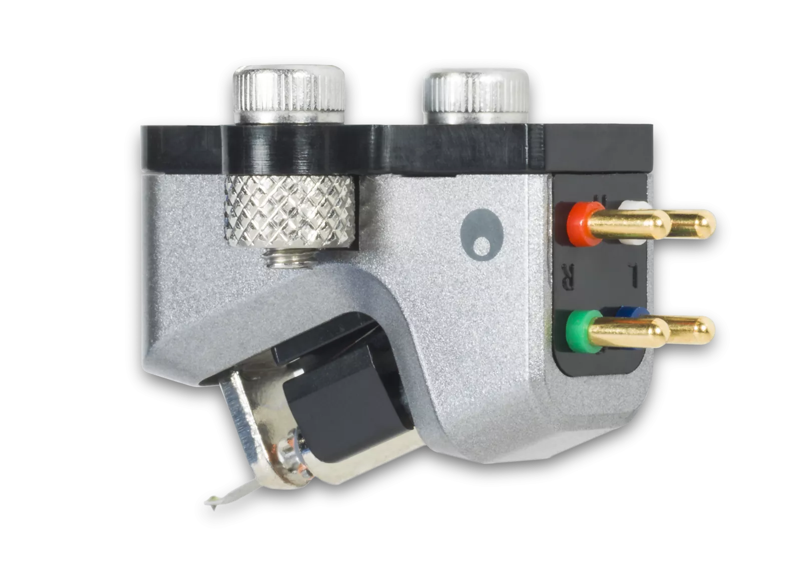
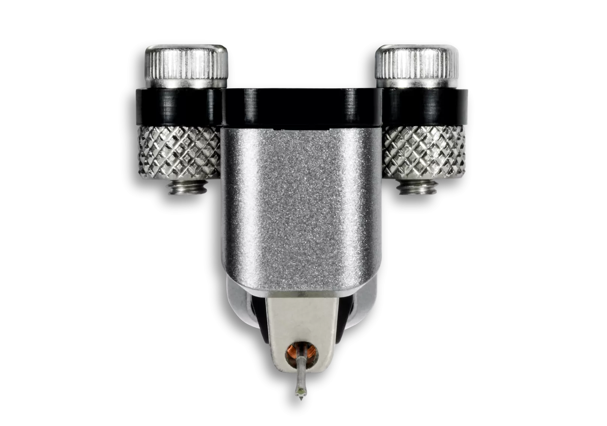
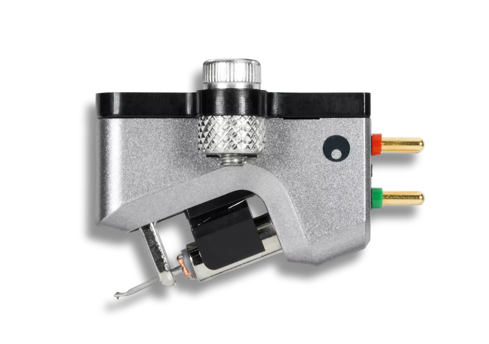
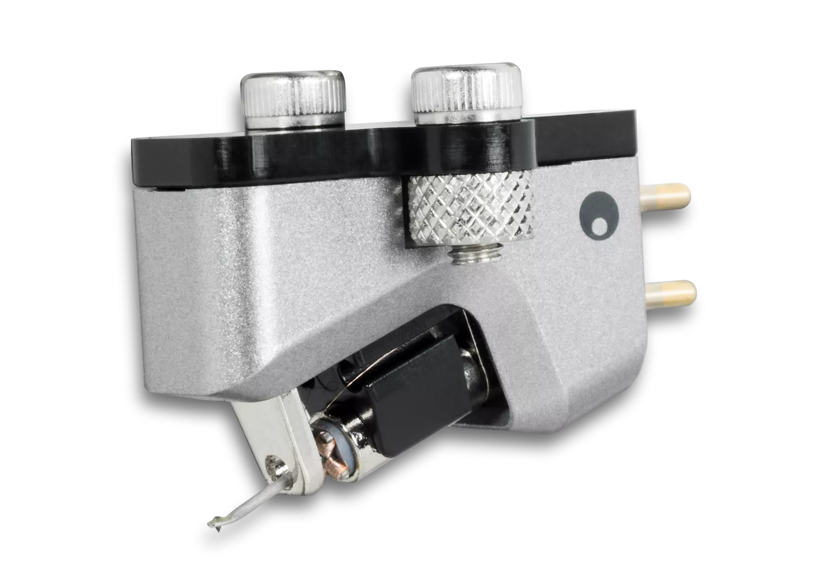
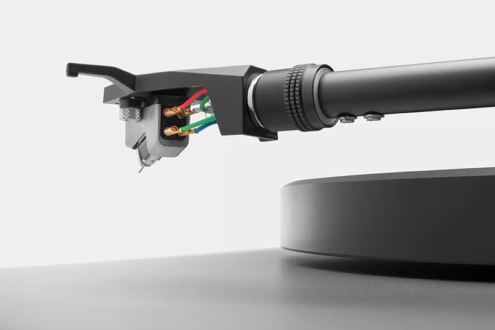
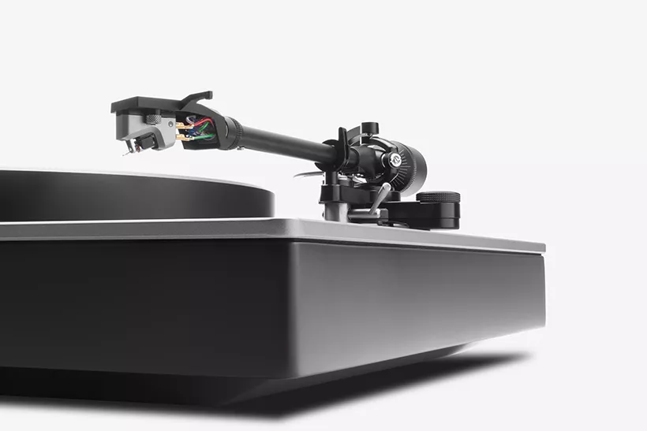

高出力ムービングコイルカートリッジ
Alva MC
Alva MC 高出力ムービングコイルカートリッジ
露出型カンチレバーと楕円針を備えたAlva MCは、Cambridge Audioのエンジニアがレコード再生における驚くべき音楽ディテールを引き出すために設計した高出力ムービングコイルカートリッジです。68°のカンチレバー角度は、1968年の創業年へのオマージュであり、50年以上にわたるイノベーションの象徴です。
高出力ムービングコイル
ムービングコイル（MC）カートリッジは、高精度かつ繊細な音楽再生で知られています。Alva MCは高出力設計を採用し、一般的なMM（ムービングマグネット）フォノイコライザーでも使用可能。MCカートリッジならではの圧倒的なディテールを手軽にお楽しみいただけます。

露出型カンチレバー設計
Alva MCは露出型カンチレバーを採用。従来の密閉型デザインで問題となる不要な共振や振動を低減します。アルミニウム製カンチレバーは軽量で応答性に優れ、レコードの溝に刻まれたより多くの音楽情報を引き出すことができます。
楕円針による忠実な再生
Alva MCには楕円針を採用。レコードの溝との接触面積が大きく、優れた周波数特性と低歪みを実現します。68度の角度はCambridge Audioの創業年1968年へのオマージュであり、50年以上にわたるイノベーションの象徴です。
軽量かつ高速レスポンス
多くのMM（ムービングマグネット）カートリッジと比較して、Alva MCは軽量でレコードの溝に対するレスポンスが速く、溝に刻まれたより多くの音楽ディテールを引き出すことができます。

ロンドンで設計・開発
Alva TT V2を引き立てるカスタムのルナグレーで仕上げられたAlva MCは、プレミアムEdge Hi-Fiに見られるパターン加工のローレットを採用した、Cambridge Audio独自のデザインです。68°の角度は1968年の創業年へのオマージュ。私たちのルーツを思い起こさせる遊び心のあるデザインです。